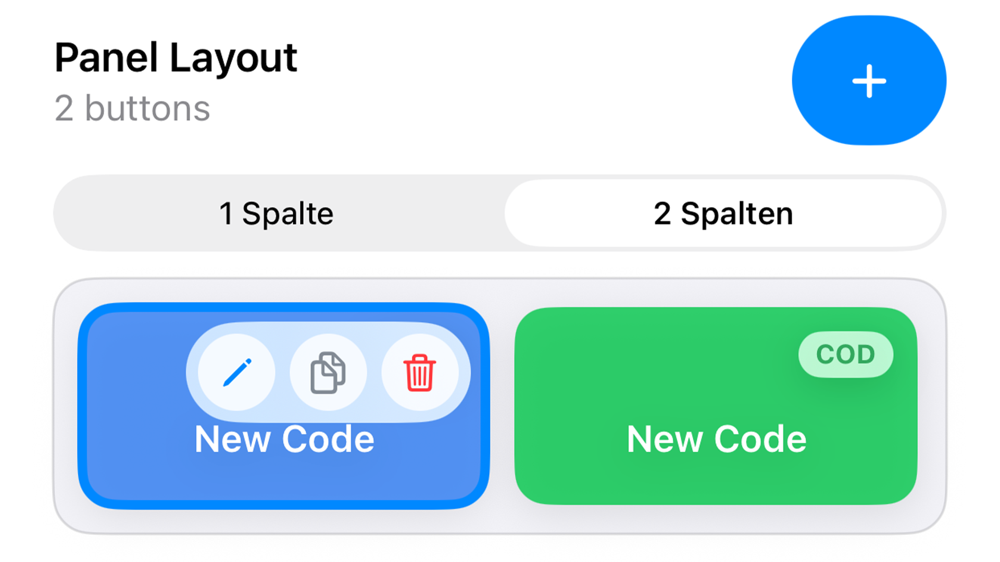
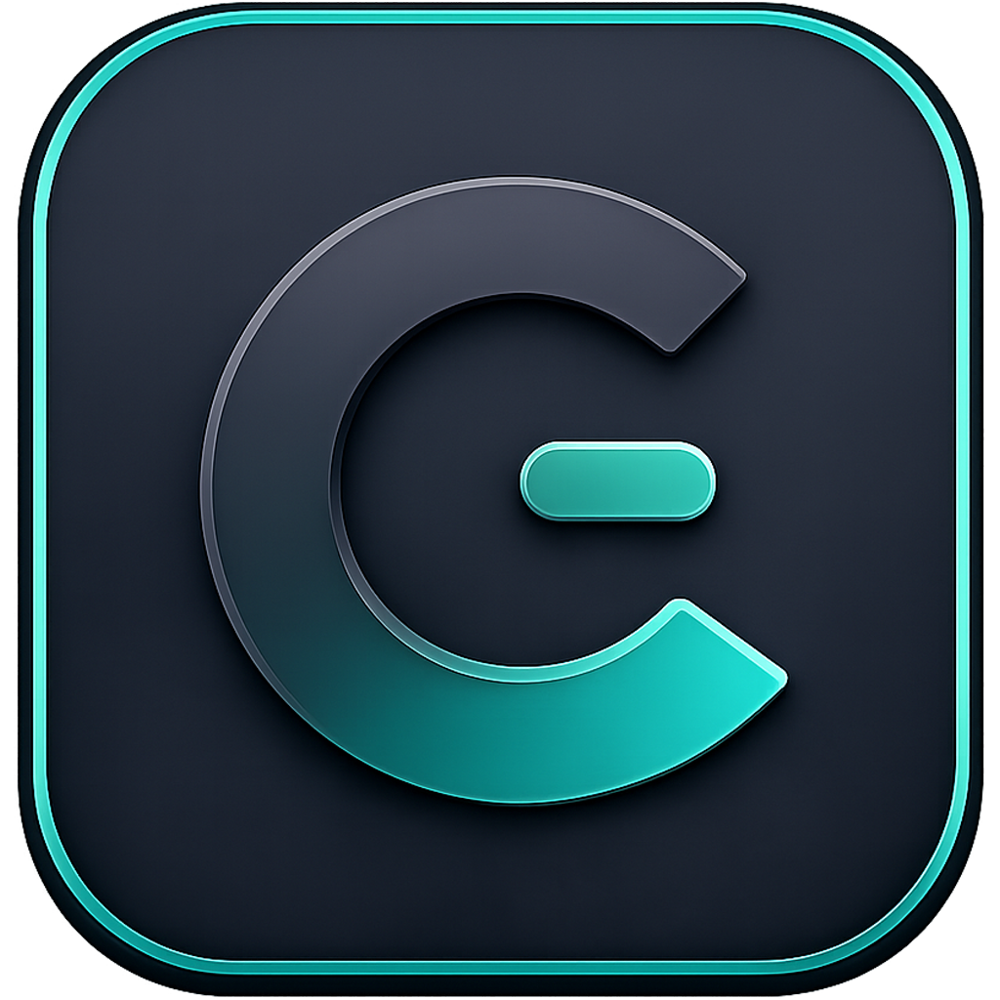
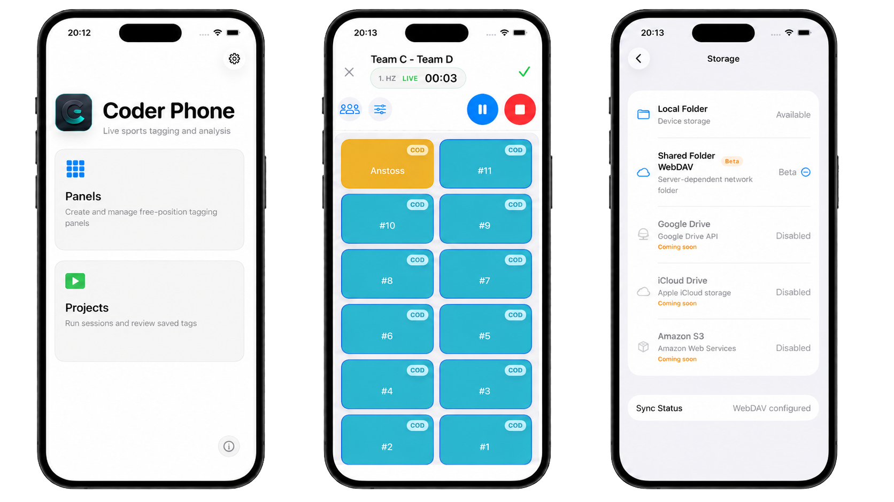
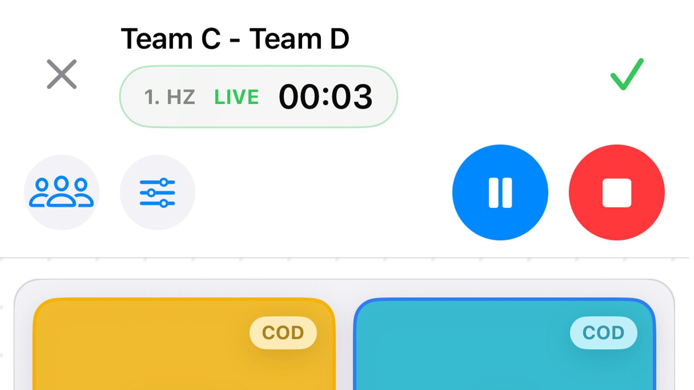
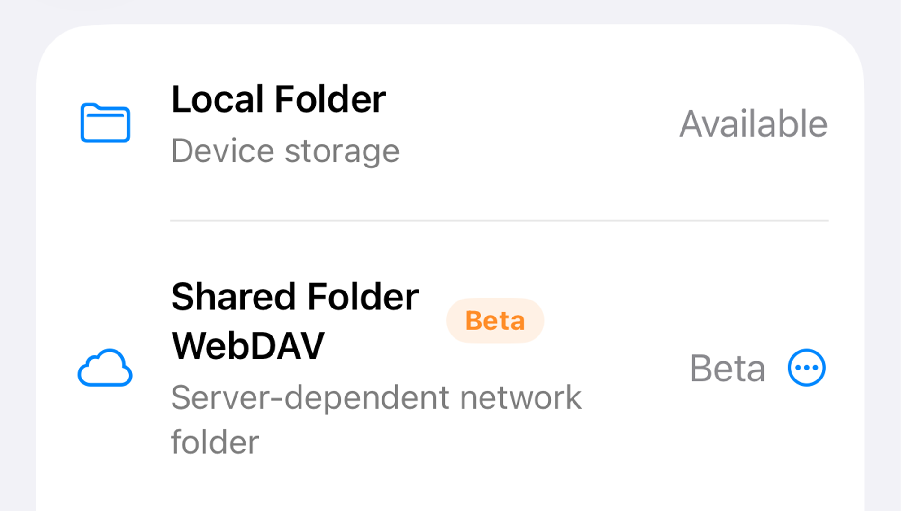

Panels im Grid aufbauen
Erstelle iPhone-Tagging-Panels mit ein- oder zweispaltigen Button-Grids, Codes, Labels, Farben und Timing.

Videoanalyse App CoderCoder Phone App
Coder Phone bringt freie Tagging-Panels, Live-Erfassung und schnelle Projektübergabe auf iOS. Coaches und Analysten können Spielphasen, Aktionen und Labels während Training oder Spiel erfassen und die Ergebnisse anschließend im Coder Workflow weiterverwenden.
Entwickelt für Live-Tagging am Spielfeldrand, Trainingsplätze und schnelle Analyse-Workflows direkt nach der Einheit.

Video
Das Overview Video zeigt den Live-Tagging Workflow am Spielfeldrand und im Training.
Schneller Rundgang
Die App konzentriert sich auf das, was am Spielfeldrand zählt: Panels vorbereiten, live taggen, sauber speichern und direkt weitergeben.

Erstelle iPhone-Tagging-Panels mit ein- oder zweispaltigen Button-Grids, Codes, Labels, Farben und Timing.

Starte Projekte, tagge live mit aktiven Codes und verknüpfe Labels automatisch mit den laufenden Spielszenen.

Speichere Projekte, exportiere XML-Dateien und tausche Panels über lokalen Ordner oder WebDAV mit anderen Analysten aus.
Für die Praxis
Tagge live während des Spiels, ohne einen kompletten Analyseplatz aufbauen zu müssen.
Erstelle schnelle Sessions für Übungen, Spielformen und individuelle Beobachtungen.
Tausche Panels, Hintergründe und XML-Exporte über lokale Ordner oder WebDAV/Nextcloud aus.
Kompatibilität
Coder Phone ist als mobile Ergänzung zum macOS Workflow gedacht: Tagging auf dem iPhone, Analyse und weitere Auswertung am Mac. XML Export, Panel-Austausch und gemeinsame Speicherorte halten die Arbeit zwischen Spielfeld und Analyseplatz verbunden.
Mehrsprachig
Coder Phone ist für internationale Trainer- und Analystenteams vorbereitet und unterstützt Deutsch, Englisch, Französisch und Spanisch.
iOS Download
Coder Phone ist jetzt im App Store verfügbar.